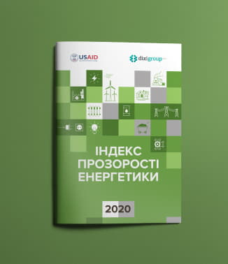

<!--DEV
@ @include('blocks/download-index/download-index.html')
-->

<article class="download-index">
  <div class="download-index__inner">
    <div class="download-index__img">
      <div class="embed-responsive embed-responsive--index-img">
        <picture>
          <source srcset="img/transparency-index-2020.webp" media="(min-width: 1280px)" type="image/webp">
          <source srcset="img/transparency-index-2020.jpg" media="(min-width: 1280px)">
            <!-- 282x327, 564x654 2x -->
          <source srcset="img/transparency-index-2020.webp" media="(min-width: 768px)" type="image/webp">
          <source srcset="img/transparency-index-2020.jpg" media="(min-width: 768px)">
            <!-- 224x260, 448x520 2x -->
          <source srcset="img/transparency-index-2020.webp" media="(min-width: 360px)" type="image/webp">
          <source srcset="img/transparency-index-2020.jpg" media="(min-width: 360px)">
            <!-- 328x380, 656x760 2x -->
          
        </picture>
      </div>
    </div>
    <div class="download-index__text">
      <h2 class="download-index__title">Індекс прозорості енергетики України 2023 рік</h2>
      <p class="download-index__intro">Презентуючи результати, отримані при підготовці попередніх п’яти видань Індексу прозорості енергетики у 2018-2023 роках, ми ставили за мету отримати широкий зворотний зв’язок від експертів з різних аспектів енергетики: вироблення політики, державного регулювання та моніторингу ринків, енергетичної безпеки, інвестування, конкуренції та ціноутворення, захисту прав споживачів тощо. Дискусії з міжнародними та українськими фахівцями сприяли удосконаленню Індексу прозорості енергетики в частині методології, аналізу та представлення результатів оцінювання</p>
      <a href="#" class="btn" download><span>Завантажити файлt</span></a>
    </div>
  </div>
</article>
